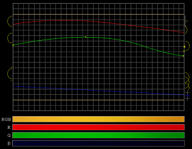

金ぴかブログの作り方
ブログの背景素材なんですけど、個別記事ページのヘッダー背景画像を金ぴかな感じにブログカスタマイズしてみました。
オーラの泉の美輪さんがテレビで言ってたんですけど、色を金ぴかにしたら何ごとも事がうまく運ぶとのことなんで、このブログも金ぴかブログにしようって思います。
美輪さんの頭みたいに金ぴかな感じのブログにしたら、ブログアフィリとかもうまくいくんじゃないかなって思うんです。SEO よりもいい感じのアクセスアップ方法なんじゃないかなって期待してます。
黄金の金色ブログ素材の作り方
ブログの背景画像を金色にする際は、やっぱ金色のブログ背景素材の作り方をどうするのかっていうのが一番頭のいたいところです。
黄金な感じの金色を出す際は、背景色に単色を指定してもうまくいかないんで、グラデーション素材をまず作成しなきゃならないんで、とっても面倒くさいんです。
以前に、グラデーションな背景画像の作り方という記事で、R.G.B.Gradation Controller という無料ソフトウェアを使用してブログ素材を作成したのですが、今回もこの無料ツールを使用して黄金色のブログ背景素材を作成してみました。
黄金色素材の RGB は青を少なめに
グラデーションな黄金色を出す際のポイントとしては、青色を少なめな感じで設定するといいと思います。
RGB の値は赤を 200 前後、緑を 200 少なめ、青を 50 前後ぐらいで調節すると黄金色に近い値がでるんじゃないかなって気がします。
このブログの記事ページ上部の黄金色は、R.G.B.Gradation Controller で、だいたいこんな感じで設定してみたら、栄えある黄金色が出てきました。

作成した黄金素材はＣＳＳにリピート素材として組み込む際、まだらになってしまうといけないんで、左右で反転させてくっつけるような感じで加工すると、ブログの背景素材にしてみても自然な感じになるんじゃないかなって思います。
今回の実際に作成してみた黄金素材はこんな感じなんです。記事中なんで縦にしてますが、ヘッダーのＣＳＳ背景素材には横にして組み込んでます。
ＣＳＳにリピート素材として組み込む際の方法に関しては、ブログにグラデーションな背景画像の作り方をご参照ください。
このブログでは記事上ヘッダーのほんのちょっとの場所にしか金色指定してませんが、ブログ背景全部に設定すると、まぶしいぐらいの金ぴかブログを作成することができるんじゃないかなって思います。